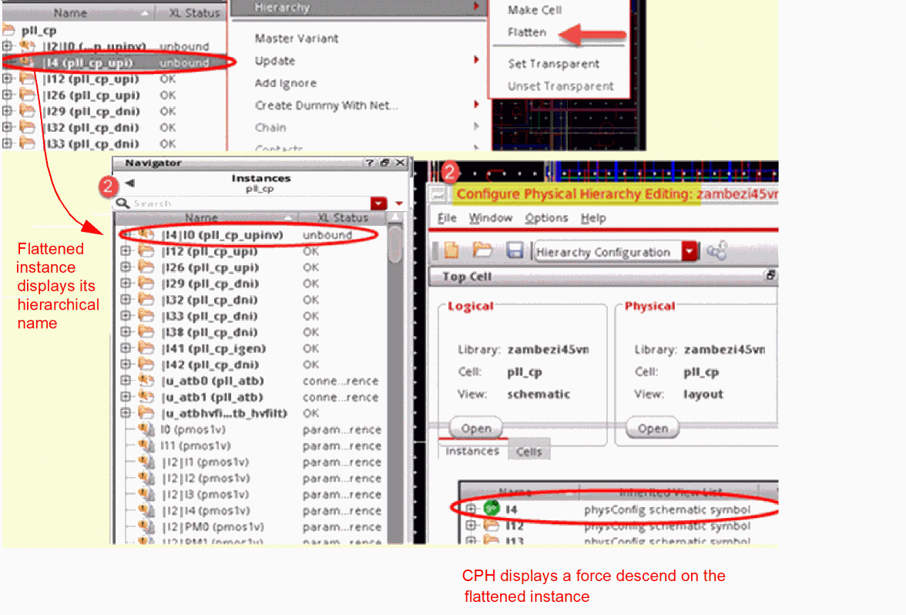
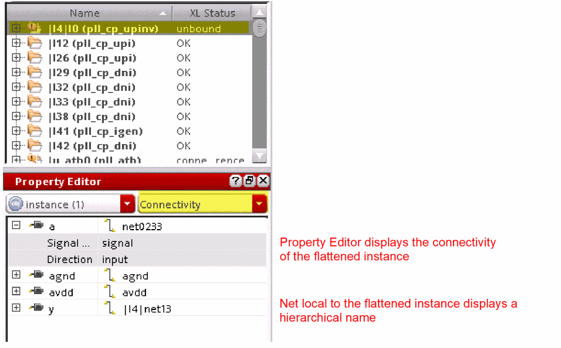
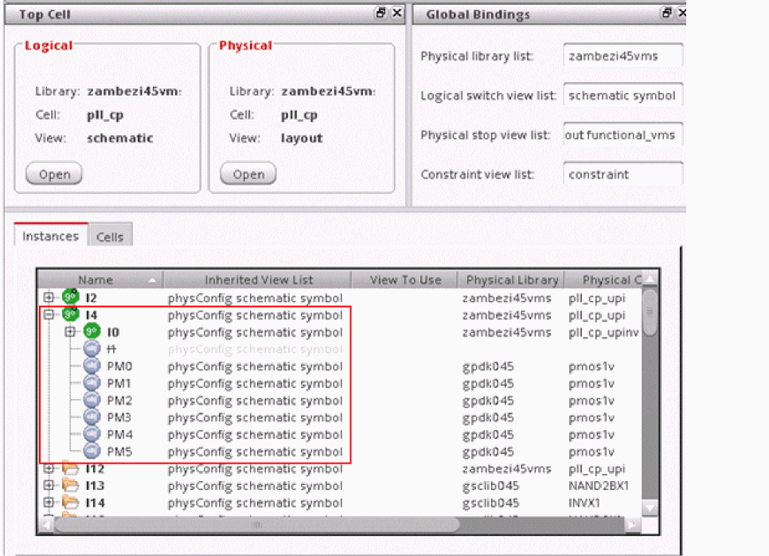

Hierarchical Layout Instance Flattening
When used in Layout XL, the Edit – Hierarchy – Flatten command not only brings the contents of the flattened instance up to the top level to allow editing at the top level, but also preserves the connectivity of the flattened instance. The command also automatically sets a force descend on the flattened instance to allow binding it to the schematic instance.

By default, flattened instances have:
-
hierarchical instance names
The flattened instances have hierarchical names, such asI4|I0, where the pipe separator (|) separates the original name of the instance, (I4), and the name after the instance is flattened (I0).-
You can choose to not display the hierarchical name for the flattened instances by setting the
flattenHierNameSepenvironment variable tofalse. -
Mosaic instances do not get a pipe-separated name, when flattened. Mosaics retain their dot-separated name format, such as
M50.I51.r0c0, after flattening. -
Unless a shape is a pinFig and the
preservePinsvariable is set tot, labels on shapes are discarded when the Flatten command is run in Layout XL. You can choose to retain labels on shapes by setting the environment variableflattenKeepLabelstot.
-
You can choose to not display the hierarchical name for the flattened instances by setting the
-
connectivity preserved
By default, the connectivity of the flattened instance is preserved and can be verified using the Property Editor. You can also probe the selected nets. The nets that are local to the flattened instance display a hierarchical name, as shown in the figure below.
You can choose to not have the connectivity of flattened instances preserved. For this, you must set theflattenPreserveConnenvironment variable tofalse.
 -
physConfig view automatically updated
When a layout instance is flattened, a hierarchy mismatch is introduced. To resolve the mismatch and to maintain the correct binding and XL compliance, Layout XL automatically sets a force descend on the flattened instance in the physConfig view. This ensures that Layout XL can look inside the schematic instance and bind its contents to the corresponding layout instances that have been flattened and brought up to the top level.
The physConfig view is modified when Layout XL commands such as Flatten, Move Hierarchy, and Make Transparent are performed.
If the physConfig and layout views are not kept synchronized, it leads to incorrect bindings and a layout that is no longer XL compliant.
The changes to the physConfig view are automatically saved, unless theautoPermuteNoAbutPropenvironment variable is set tofalse. If the environment variable is set tofalse, the CPH window automatically opens and you can choose whether to save or discard the changes.
The physConfig view is synchronized with the layout if the Undo or Redo operations are performed after saving the layout.
If you have multiple instances of the same nonparameterized cell master in your layout, but you would like to update only one or few of the instances, use the Master Variant command instead of Flatten. Flatten ungroups the instances at the top level, but Master Variant generates a different, individually editable variant of the instance, still keeping the schematic and layout correspondence in place.
Related Topics
Return to top